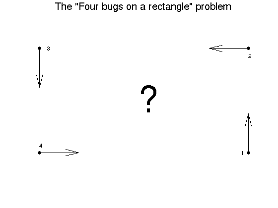
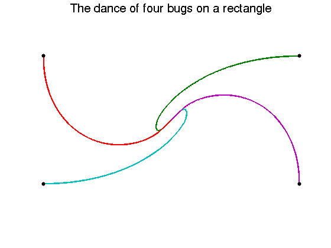
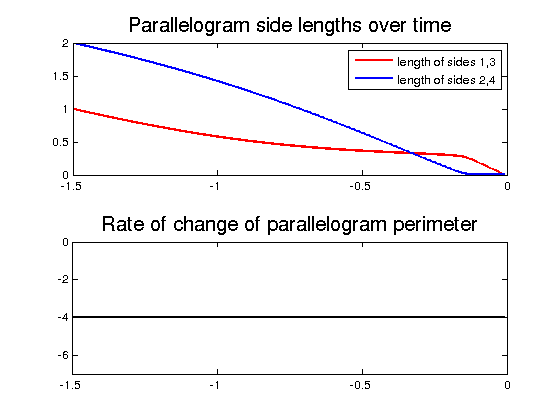
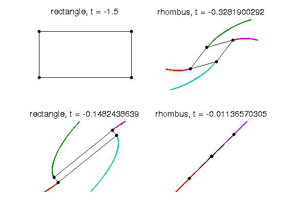

Four bugs on a rectangle
Hrothgar, 5th November 2013
Contents
(Chebfun example ode/FourBugs.m)
[Tags: #nonlinearODE]
Problem: Four particles start at $t=0$ at the vertices of a $2\times1$ rectangle. Each one chases the particle to its left with speed 1. When does a collision occur?
format long, format compact LW = 'linewidth'; FS = 'fontsize'; MS = 'markersize';
Introduction
The above problem was posed by Trefethen [1] to students as a simple extension to a similar problem made famous by the great Martin Gardner in 1957, for whom the particles were instead bugs that begun on the corners of a square.
Here is a diagram of the rectangle version of the problem, which we will use Chebfun to solve. What paths will the bugs take, and when will they collide?
figure(1) xx = [-1 1 1 -1]; yy = [-1 -1 1 1]/2; uu = [1 0 -1 0]; vv = [0 1 0 -1]; quiver(xx, yy, uu, vv, 1/3, 'k-'), hold on plot(xx, yy, 'k.', MS, 18), text(-.07,0,'?','FontSize',60) text(.93,-.5,'1'); text(1,.43,'2'); text(-.93,.5,'3'); text(-1,-.43,'4'); axis tight, axis equal, axis off title('The "Four bugs on a rectangle" problem', FS, 16)
The system of ODEs
For notational and computational convenience, we will place the bugs on the corners of a $2\times1$ rectangle centered at the origin in the complex plane. By symmetry, bugs 1 and 3 will follow the same path rotated $180^{\circ}$, and so will 2 and 4. Thus the bugs will always form a parallelogram centered at the origin as they converge.
The system of ODEs that describes the motion of the bugs is derived as follows. We denote the position of bug $k$ as $z_k$ and the lengths of the sides of the parallelogram they form as $\ell_1$ and $\ell_2$. We let $\theta$ denote the internal angle formed by $z_2$ and its neighbors and $\phi$ the orientation of the system, equal to $\arg(z_2 - z_1)$. Now a system of ODEs governing the dance of the bugs may be written down [1]:
$$ \frac{\mathrm{d}z_1}{\mathrm{d}t} = \frac{z_2 - z_1}{|z_2 - z_1|}, \qquad \frac{\mathrm{d}z_2}{\mathrm{d}t} = \frac{- z_2 - z_1}{|z_2 + z_1|}, $$
$$ \ell_1 \mathrm{e}^{\mathrm{i}\phi} = z_2 - z_1, \qquad \ell_2 \mathrm{e}^{\mathrm{i}(\phi-\theta)} = z_1 + z_2. $$
However, it will be more convenient for us to work in an equivalent system in the variables $\ell_1, \ell_2, \phi, \theta$:
$$ \frac{\mathrm{d}\ell_1}{\mathrm{d}t} = -1 - \cos\theta, \qquad \frac{\mathrm{d}\ell_2}{\mathrm{d}t} = -1 + \cos\theta, $$
$$ \frac{\mathrm{d}\theta}{\mathrm{d}t} = \left( \frac{1}{\ell_1} - \frac{1}{\ell_2} \right) \sin\theta, \qquad \frac{\mathrm{d}\phi}{\mathrm{d}t} = \frac{\sin\theta}{\ell_1}. $$
The question of when the bugs collide is ready to be answered. If we add the derivatives of the side lengths, we find that $\frac{\mathrm{d}\ell_1}{\mathrm{d}t} - \frac{\mathrm{d}\ell_2}{\mathrm{d}t} = -2$, indicating that the rate of change of the perimeter of the parallelogram (twice the above) is the constant $-4$. The perimeter begins as 6, so after exactly 1.5 time units the bugs should collide at the origin.
However, there is much more to this problem than just the final collision time!
Solution with Chebfun
We can set up the bugs' dance as a system of ODEs in Chebfun to be solved with Chebfun's overload of ODE113:
interval = [-1.5, -.01]; % There is a singularity at t = 0. opts = odeset('abstol', 5e-14, 'reltol', 5e-14); fun = @(t, u) ... % u = [theta, phi, ell1, ell2] [ (1./u(3)-1./u(4)).*sin(u(1)); sin(u(1))./u(3); -cos(u(1))-1; cos(u(1))-1 ]; initial_conds = [pi/2, pi/2, 1, 2]; u = ode113(fun, domain(interval), initial_conds, opts);
The variable `u` is now a 4-column quasimatrix containing the solution to the system of differential equations. With some simple transformations we can reconstruct the paths of the four bugs in the complex plane.
theta = u(:,1); phi = u(:,2); ell1 = u(:,3); ell2 = u(:,4); bugs = ( ell2.*exp(1i*(phi-theta)) - ell1.*exp(1i*phi) )/2; bugs(:,2) = ( ell2.*exp(1i*(phi-theta)) + ell1.*exp(1i*phi) )/2; bugs(:,3) = -bugs(:,1); bugs(:,4) = -bugs(:,2); bugs(:,5) = bugs(:,1);
Here is a plot of their movement toward the origin.
figure(2) plot(bugs, LW, 2), hold on plot(xx, yy, 'k.', MS, 18), axis equal, axis off title('The dance of four bugs on a rectangle', FS, 16)
As explained above, the bugs always form a parallelogram as they converge. What is less obvious is how the parallelogram transforms as the bugs near the origin. Here are some level sets of the bugs' approach.
figure(2), hold on for t = linspace(-1.5, -.01, 7), plot(bugs(t,:), 'k.-', MS, 18) end title('The dance of four bugs on a rectangle, with level sets', FS, 16)

We can verify in Chebfun that the perimeter of the bugs' parallelogram decreases at a constant rate 4.
figure(3)
subplot(2,1,1)
plot(ell1, 'r-', ell2, 'b-', LW, 2)
legend('length of sides 1,3', 'length of sides 2,4')
title('Parallelogram side lengths over time', FS, 16)
subplot(2,1,2)
plot(2*diff(ell1 + ell2), 'k-', LW, 2)
ylim([-7 0])
title('Rate of change of parallelogram perimeter', FS, 16)
 Computing critical times
The exposition in [1] also includes discussion of critical times at which the bugs form special shapes. In particular, at each $t\in t_\mathrm{rect}$ the bugs form a rectangle, and at each $t\in t_\mathrm{rhomb}$ the bugs form a rhombus. (The bugs form these shapes infinitely many times, but after the first few steps of their dance, the spatial scale has shrunk so much that we cannot hope to compute exact time values on a computer using this method.) Here is one way to find the first two times in $t_\mathrm{rect}$ using Chebfun. We can construct a chebfun to test the orthogonality of the parallelogram at any point in time. The roots of that function will then correspond to the times at which the bugs form a rectangle.
F_rect = chebfun(@(t) theta(t)-pi/2, interval); t_rect_exact = [-1.5; -0.148243863926]; % from Chapman et al. [1] t_rect_est = roots(F_rect); % Chebfun estimates fprintf('{t_rect} exact (Chapman et al.): %-2.16f %-16.12f\n', t_rect_exact) fprintf('{t_rect} estimated by Chebfun: %-2.16f %-16.16f\n', t_rect_est)
{t_rect} exact (Chapman et al.): -1.5000000000000000 -0.148243863926
{t_rect} estimated by Chebfun: -1.5000000000000000 -0.1482438639260522
Our second computed answer agrees to every digit with the time given in [1], and there is a chance that Chebfun has does even better. (The tolerance of the ODE solver was set to 5e-14, so in fact we should expect that Chebfun has done one digit better.)
If we construct a similar chebfun to test the equality of the parallelogram's side lengths, then its roots will correspond to the times when the bugs form a rhombus.
F_rhomb = chebfun(@(t) sum(diff(abs(bugs(t,1:4) - bugs(t,2:5)))), ... interval, 'vectorize'); t_rhomb_exact = [-0.328190029216; -0.011365703053]; % from Chapman et al. [1] t_rhomb_est = roots(F_rhomb); % Chebfun estimates fprintf('{t_rhomb} exact (Chapman et al.): %-19.12f %-12.12f\n', t_rhomb_exact) fprintf('{t_rhomb} estimated by Chebfun: %-16.16f %-16.16f\n', t_rhomb_est)
{t_rhomb} exact (Chapman et al.): -0.328190029216 -0.011365703053
{t_rhomb} estimated by Chebfun: -0.3281900292160487 -0.0113657030533270
Again, Chebfun gives an answer correct to as many digits as are available.
Let us plot the special configurations. Notice how the aspect ratio gets more extreme with time: by $t\approx -0.0113$ as in the last plot, the aspect ratio is near $5\times 10^{-5}$ and the rhombus has been flattened to nearly one dimension.
figure(4) tt = sort([t_rect_est, t_rhomb_est]); subplot(2,2,1), hold on plot(bugs(tt(1),:), 'k.-', MS, 18) axis equal, zoom(1), axis off title(['rectangle, t = ' num2str(tt(1),10)], FS, 14) subplot(2,2,2), hold on plot(bugs, 'interval', [-1.5 tt(3)], LW, 2) plot(bugs(tt(3),:), 'k.-', MS, 18) axis equal, zoom(1.8), axis off title(['rhombus, t = ' num2str(tt(3),10)], FS, 14) subplot(2,2,3), hold on plot(bugs, 'interval', [-1.5 tt(2)], LW, 2) plot(bugs(tt(2),:), 'k.-', MS, 18) axis equal, zoom(6), axis off title(['rectangle, t = ' num2str(tt(2),10)], FS, 14) subplot(2,2,4), hold on plot(bugs, 'interval', [-1.5 tt(4)], LW, 2) plot(bugs(tt(4),:), 'k.-', MS, 18) axis equal, zoom(60), axis off title(['rhombus, t = ' num2str(tt(4),10)], FS, 14)
References:
[1] S. J. Chapman, James Lottes, and Lloyd N. Trefethen. "Four bugs on a rectangle." Proceedings of the Royal Society A: 467, no. 2127 (2011): 881-896.